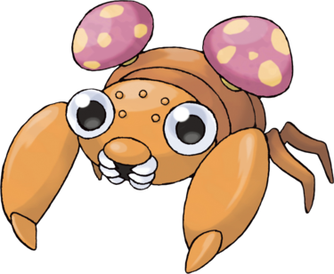

Paras est un Pokémon ressemblant à un arthropode à la carapace orangée. Il possède deux yeux globuleux. Deux champignons, évoquant le champignon parasite cordyceps, se développent sur son dos et se nourrissent des nutriments de Paras.